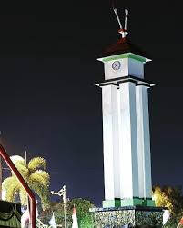

Malam Di Kota Pacu Jalur

Jika kau hidu kopi kemarin
ingatlah angin pernah tajam
setajam tuai padi ibu
di tanah kelahiran
yang pernah ia tanam jantung
tumbuh menembus langit
menembus harapan demi harapan
Garis nasib memang rahasia benar
meski kau siasat waktu
mengicuh mimpi dan hatimu sendiri
tapi luka abadi
ngilu menyerang tiap sendi
bukit dan laut yang kau jelajahi
Berbalik adalah jalan terbaik
kenangan ialah tempat kita pulang
ziarahi kekalahan demi kekalahan
dan bola-bola waktu yang pecah
segera kau ketahui maknanya
dibuek oleh Aldi Pratama